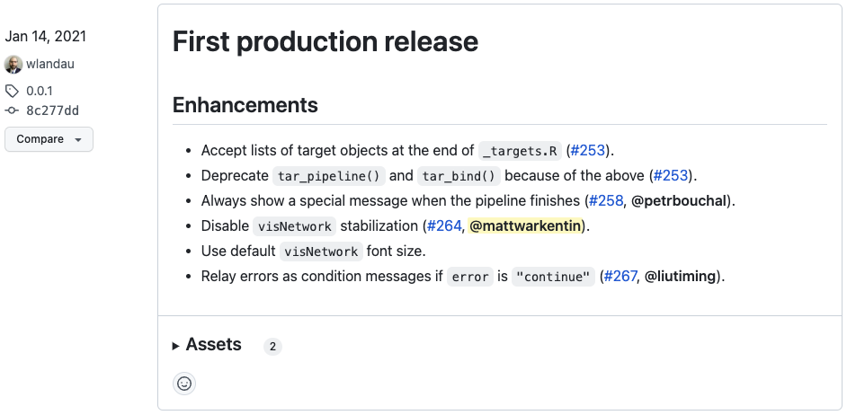
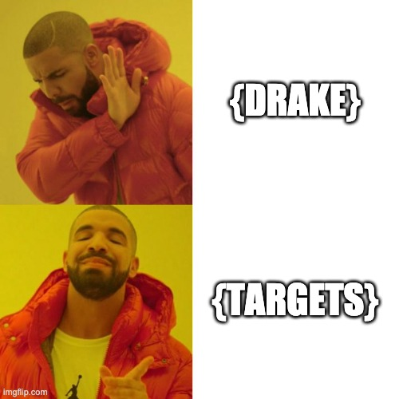
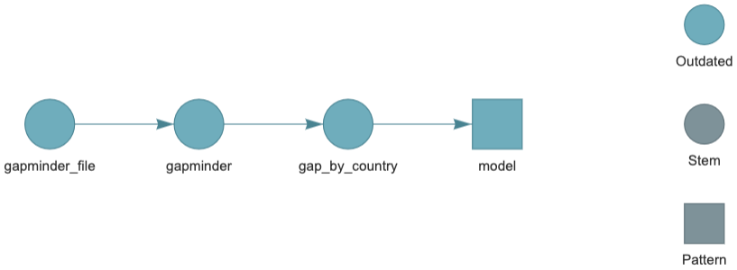
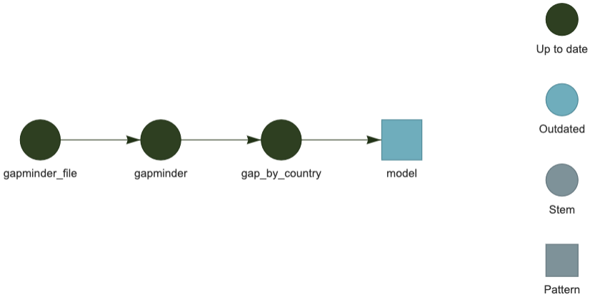

name: title class: left middle hide-count title-bg <style>.shareagain-bar { --shareagain-foreground: rgb(255, 255, 255); --shareagain-background: rgba(0, 0, 0, 0.5); --shareagain-facebook: none; --shareagain-linkedin: none; --shareagain-pinterest: none; --shareagain-pocket: none; --shareagain-reddit: none; }</style> <div class="talk-meta"> <div> <h1 class="talk-title">Reproducible and scalable data analysis workflows with targets</h1> <p class="talk-subtitle">Dynamic Function-Oriented Make-Like Declarative Pipelines for R</p> </div> <div class="talk-author"> <span> <svg aria-hidden="true" role="img" viewBox="0 0 512 512" style="height:1em;width:1em;vertical-align:-0.125em;margin-left:auto;margin-right:auto;font-size:inherit;fill:#FFFFFF;overflow:visible;position:relative;"><path d="M191.1 224c0-17.72-14.34-32.04-32-32.04L144 192c-35.34 0-64 28.66-64 64.08v47.79C80 339.3 108.7 368 144 368H160c17.66 0 32-14.36 32-32.06L191.1 224zM256 0C112.9 0 4.583 119.1 .0208 256L0 296C0 309.3 10.75 320 23.1 320S48 309.3 48 296V256c0-114.7 93.34-207.8 208-207.8C370.7 48.2 464 141.3 464 256v144c0 22.09-17.91 40-40 40h-110.7C305 425.7 289.7 416 272 416H241.8c-23.21 0-44.5 15.69-48.87 38.49C187 485.2 210.4 512 239.1 512H272c17.72 0 33.03-9.711 41.34-24H424c48.6 0 88-39.4 88-88V256C507.4 119.1 399.1 0 256 0zM368 368c35.34 0 64-28.7 64-64.13V256.1C432 220.7 403.3 192 368 192l-16 0c-17.66 0-32 14.34-32 32.04L320 335.9C320 353.7 334.3 368 352 368H368z"/></svg> Matt Warkentin, PhD </span> <div class="talk-social pl3 pt2 pb2 lh-copy"><div> <svg aria-hidden="true" role="img" viewBox="0 0 512 512" style="height:1em;width:1em;vertical-align:-0.125em;margin-left:auto;margin-right:auto;font-size:inherit;fill:#FFFFFF;overflow:visible;position:relative;"><path d="M464 64C490.5 64 512 85.49 512 112C512 127.1 504.9 141.3 492.8 150.4L275.2 313.6C263.8 322.1 248.2 322.1 236.8 313.6L19.2 150.4C7.113 141.3 0 127.1 0 112C0 85.49 21.49 64 48 64H464zM217.6 339.2C240.4 356.3 271.6 356.3 294.4 339.2L512 176V384C512 419.3 483.3 448 448 448H64C28.65 448 0 419.3 0 384V176L217.6 339.2z"/></svg> <a href="mailto:matthew.warkentin@ucalgary.ca">matthew.warkentin@ucalgary.ca</a> </div><div> <svg aria-hidden="true" role="img" viewBox="0 0 496 512" style="height:1em;width:0.97em;vertical-align:-0.125em;margin-left:auto;margin-right:auto;font-size:inherit;fill:#FFFFFF;overflow:visible;position:relative;"><path d="M165.9 397.4c0 2-2.3 3.6-5.2 3.6-3.3 .3-5.6-1.3-5.6-3.6 0-2 2.3-3.6 5.2-3.6 3-.3 5.6 1.3 5.6 3.6zm-31.1-4.5c-.7 2 1.3 4.3 4.3 4.9 2.6 1 5.6 0 6.2-2s-1.3-4.3-4.3-5.2c-2.6-.7-5.5 .3-6.2 2.3zm44.2-1.7c-2.9 .7-4.9 2.6-4.6 4.9 .3 2 2.9 3.3 5.9 2.6 2.9-.7 4.9-2.6 4.6-4.6-.3-1.9-3-3.2-5.9-2.9zM244.8 8C106.1 8 0 113.3 0 252c0 110.9 69.8 205.8 169.5 239.2 12.8 2.3 17.3-5.6 17.3-12.1 0-6.2-.3-40.4-.3-61.4 0 0-70 15-84.7-29.8 0 0-11.4-29.1-27.8-36.6 0 0-22.9-15.7 1.6-15.4 0 0 24.9 2 38.6 25.8 21.9 38.6 58.6 27.5 72.9 20.9 2.3-16 8.8-27.1 16-33.7-55.9-6.2-112.3-14.3-112.3-110.5 0-27.5 7.6-41.3 23.6-58.9-2.6-6.5-11.1-33.3 2.6-67.9 20.9-6.5 69 27 69 27 20-5.6 41.5-8.5 62.8-8.5s42.8 2.9 62.8 8.5c0 0 48.1-33.6 69-27 13.7 34.7 5.2 61.4 2.6 67.9 16 17.7 25.8 31.5 25.8 58.9 0 96.5-58.9 104.2-114.8 110.5 9.2 7.9 17 22.9 17 46.4 0 33.7-.3 75.4-.3 83.6 0 6.5 4.6 14.4 17.3 12.1C428.2 457.8 496 362.9 496 252 496 113.3 383.5 8 244.8 8zM97.2 352.9c-1.3 1-1 3.3 .7 5.2 1.6 1.6 3.9 2.3 5.2 1 1.3-1 1-3.3-.7-5.2-1.6-1.6-3.9-2.3-5.2-1zm-10.8-8.1c-.7 1.3 .3 2.9 2.3 3.9 1.6 1 3.6 .7 4.3-.7 .7-1.3-.3-2.9-2.3-3.9-2-.6-3.6-.3-4.3 .7zm32.4 35.6c-1.6 1.3-1 4.3 1.3 6.2 2.3 2.3 5.2 2.6 6.5 1 1.3-1.3 .7-4.3-1.3-6.2-2.2-2.3-5.2-2.6-6.5-1zm-11.4-14.7c-1.6 1-1.6 3.6 0 5.9 1.6 2.3 4.3 3.3 5.6 2.3 1.6-1.3 1.6-3.9 0-6.2-1.4-2.3-4-3.3-5.6-2z"/></svg> <a href="https://github.com/mattwarkentin">@mattwarkentin</a> </div></div> <span> <svg aria-hidden="true" role="img" viewBox="0 0 640 512" style="height:1em;width:1.25em;vertical-align:-0.125em;margin-left:auto;margin-right:auto;font-size:inherit;fill:#FFFFFF;overflow:visible;position:relative;"><path d="M320 128C328.8 128 336 135.2 336 144V160H352C360.8 160 368 167.2 368 176C368 184.8 360.8 192 352 192H320C311.2 192 304 184.8 304 176V144C304 135.2 311.2 128 320 128zM476.8 98.06L602.4 125.1C624.4 130.9 640 150.3 640 172.8V464C640 490.5 618.5 512 592 512H48C21.49 512 0 490.5 0 464V172.8C0 150.3 15.63 130.9 37.59 125.1L163.2 98.06L302.2 5.374C312.1-1.791 327-1.791 337.8 5.374L476.8 98.06zM256 512H384V416C384 380.7 355.3 352 320 352C284.7 352 256 380.7 256 416V512zM96 192C87.16 192 80 199.2 80 208V272C80 280.8 87.16 288 96 288H128C136.8 288 144 280.8 144 272V208C144 199.2 136.8 192 128 192H96zM496 272C496 280.8 503.2 288 512 288H544C552.8 288 560 280.8 560 272V208C560 199.2 552.8 192 544 192H512C503.2 192 496 199.2 496 208V272zM96 320C87.16 320 80 327.2 80 336V400C80 408.8 87.16 416 96 416H128C136.8 416 144 408.8 144 400V336C144 327.2 136.8 320 128 320H96zM496 400C496 408.8 503.2 416 512 416H544C552.8 416 560 408.8 560 400V336C560 327.2 552.8 320 544 320H512C503.2 320 496 327.2 496 336V400zM320 88C271.4 88 232 127.4 232 176C232 224.6 271.4 264 320 264C368.6 264 408 224.6 408 176C408 127.4 368.6 88 320 88z"/></svg> Cumming School of Medicine, University of Calgary </span> </div> <div class="talk-date"> <span> <svg aria-hidden="true" role="img" viewBox="0 0 448 512" style="height:1em;width:0.88em;vertical-align:-0.125em;margin-left:auto;margin-right:auto;font-size:inherit;fill:#FFFFFF;overflow:visible;position:relative;"><path d="M160 32V64H288V32C288 14.33 302.3 0 320 0C337.7 0 352 14.33 352 32V64H400C426.5 64 448 85.49 448 112V160H0V112C0 85.49 21.49 64 48 64H96V32C96 14.33 110.3 0 128 0C145.7 0 160 14.33 160 32zM0 192H448V464C448 490.5 426.5 512 400 512H48C21.49 512 0 490.5 0 464V192zM80 256C71.16 256 64 263.2 64 272V368C64 376.8 71.16 384 80 384H176C184.8 384 192 376.8 192 368V272C192 263.2 184.8 256 176 256H80z"/></svg> October 28th, 2022 </span> </div> </div> --- class: middle ``` Package: targets Title: Dynamic Function-Oriented 'Make'-Like Declarative Workflows Description: As a pipeline toolkit for Statistics and data science in R... Authors@R: c( person( given = c("William", "Michael"), family = "Landau", role = c("aut", "cre"), email = "will.landau@gmail.com", comment = c(ORCID = "0000-0003-1878-3253") ), person( given = c("Matthew", "T."), family = "Warkentin", role = "ctb" ), ..., person( family = "Eli Lilly and Company", role = "cph" )) ``` --- class: middle ``` Package: targets Title: Dynamic Function-Oriented 'Make'-Like Declarative Workflows Description: As a pipeline toolkit for Statistics and data science in R... Authors@R: c( person( given = c("William", "Michael"), family = "Landau", role = c("aut", "cre"), email = "will.landau@gmail.com", comment = c(ORCID = "0000-0003-1878-3253") ), * person( * given = c("Matthew", "T."), * family = "Warkentin", * role = "ctb" * ), ..., person( family = "Eli Lilly and Company", role = "cph" )) ``` --- .w-90.ba.b--gray-4.br2.pv2.ph3.mv5.shadow-4.absolute.animated.lightSpeedIn[ .f4[From: Lepore, Mauro] .f4[Subject: Would you be willing to review a package for rOpenSci?] .f4[To: <warkentin@lunenfeld.ca>] *** .f4[Dear Matthew, .fade[Hi, this is Mauro . I hope you and your loved ones are safe.] .b.grow[I'm writing to ask if you would be willing to review a package for rOpenSci.] .fade[As you probably know, rOpenSci conducts peer review of R packages contributed to our collection in a manner similar to journals.] .b.grow[The package targets by Will Landau provides make-like pipelines for R.] .fade[targets supersedes drake, and is submitted to rOpenSci jointly with the package tarchetypes. You can find targets and tarchetypes on GitHub here and here. We conduct our open review process via GitHub as well.] .f2[...] Thank you for your time. Sincerely, Mauro ] ] --- class: center middle --- class: center middle  --- class: lh-copy <img src="imgs/targets.png" class="targets-pic"/> ### <svg aria-hidden="true" role="img" viewBox="0 0 512 512" style="height:1em;width:1em;vertical-align:-0.125em;margin-left:auto;margin-right:auto;font-size:inherit;fill:currentColor;overflow:visible;position:relative;"><path d="M288 256C288 273.7 273.7 288 256 288C238.3 288 224 273.7 224 256C224 238.3 238.3 224 256 224C273.7 224 288 238.3 288 256zM112 256C112 176.5 176.5 112 256 112C335.5 112 400 176.5 400 256C400 335.5 335.5 400 256 400C176.5 400 112 335.5 112 256zM256 336C300.2 336 336 300.2 336 256C336 211.8 300.2 176 256 176C211.8 176 176 211.8 176 256C176 300.2 211.8 336 256 336zM512 256C512 397.4 397.4 512 256 512C114.6 512 0 397.4 0 256C0 114.6 114.6 0 256 0C397.4 0 512 114.6 512 256zM256 64C149.1 64 64 149.1 64 256C64 362 149.1 448 256 448C362 448 448 362 448 256C448 149.1 362 64 256 64z"/></svg> What is {targets}? > .f4[As a pipeline toolkit for Statistics and data science in R, the 'targets' package brings together function-oriented programming and 'Make'-like declarative workflows. It analyzes the dependency relationships among the tasks of a workflow, skips steps that are already up to date, runs the necessary computation with optional parallel workers, abstracts files as R objects, and provides tangible evidence that the results match the underlying code and data.] --- class: lh-copy <img src="imgs/targets.png" class="targets-pic mover"/> ### <svg aria-hidden="true" role="img" viewBox="0 0 512 512" style="height:1em;width:1em;vertical-align:-0.125em;margin-left:auto;margin-right:auto;font-size:inherit;fill:currentColor;overflow:visible;position:relative;"><path d="M288 256C288 273.7 273.7 288 256 288C238.3 288 224 273.7 224 256C224 238.3 238.3 224 256 224C273.7 224 288 238.3 288 256zM112 256C112 176.5 176.5 112 256 112C335.5 112 400 176.5 400 256C400 335.5 335.5 400 256 400C176.5 400 112 335.5 112 256zM256 336C300.2 336 336 300.2 336 256C336 211.8 300.2 176 256 176C211.8 176 176 211.8 176 256C176 300.2 211.8 336 256 336zM512 256C512 397.4 397.4 512 256 512C114.6 512 0 397.4 0 256C0 114.6 114.6 0 256 0C397.4 0 512 114.6 512 256zM256 64C149.1 64 64 149.1 64 256C64 362 149.1 448 256 448C362 448 448 362 448 256C448 149.1 362 64 256 64z"/></svg> What is {targets}? > .f4[The `targets` package is a Make-like pipeline toolkit for Statistics and data science in R. With `targets`, you can maintain a reproducible workflow without repeating yourself. `targets` learns how your pipeline fits together, skips costly runtime for tasks that are already up to date, runs only the necessary computation, supports implicit parallel computing, abstracts files as R objects, and shows tangible evidence that the results match the underlying code and data.] .f4.appear[ - `{targets}` is a project workflow tool that is very `R`-centric + Similar tools exist for other languages, such as `{GNU make}` and `{snakemake}` - It allows you to effectively modularize your data analysis projects to create obvious and reproducible workflows - Can easily extend your workflow to massively parallelize tasks + With some relatively simple setup can use external compute resources (e.g., HPC) as a computational back-end for your pipeline ] --- <img src="imgs/drake.svg" class="drake-pic"/> ### <svg aria-hidden="true" role="img" viewBox="0 0 512 512" style="height:1em;width:1em;vertical-align:-0.125em;margin-left:auto;margin-right:auto;font-size:inherit;fill:currentColor;overflow:visible;position:relative;"><path d="M256 0C114.6 0 0 114.6 0 256s114.6 256 256 256s256-114.6 256-256S397.4 0 256 0zM256 464c-114.7 0-208-93.31-208-208S141.3 48 256 48s208 93.31 208 208S370.7 464 256 464zM256 336c-18 0-32 14-32 32s13.1 32 32 32c17.1 0 32-14 32-32S273.1 336 256 336zM289.1 128h-51.1C199 128 168 159 168 198c0 13 11 24 24 24s24-11 24-24C216 186 225.1 176 237.1 176h51.1C301.1 176 312 186 312 198c0 8-4 14.1-11 18.1L244 251C236 256 232 264 232 272V288c0 13 11 24 24 24S280 301 280 288V286l45.1-28c21-13 34-36 34-60C360 159 329 128 289.1 128z"/></svg> What about {drake}? > The `drake` package is an older and more established R-focused pipeline toolkit. It is has become a key piece of the R ecosystem, and development and support will continue. > The `targets` package borrows from past learnings, user suggestions, discussions, complaints, success stories, and feature requests, and it improves the user experience in ways that will never be possible in `drake`. -- .ml6[`targets` is more...] .f4.ml6[ - Efficient - Reproducible - Maintainable - Portable - Domain specific - Uses modern best practices ] .f4.gray.fr[See the [Statement of Need](https://wlandau.github.io/targets/articles/need.html) for details.] --- class: center middle hide-count  --- class: highlight-last-item ### <svg aria-hidden="true" role="img" viewBox="0 0 384 512" style="height:1em;width:0.75em;vertical-align:-0.125em;margin-left:auto;margin-right:auto;font-size:inherit;fill:currentColor;overflow:visible;position:relative;"><path d="M112.1 454.3c0 6.297 1.816 12.44 5.284 17.69l17.14 25.69c5.25 7.875 17.17 14.28 26.64 14.28h61.67c9.438 0 21.36-6.401 26.61-14.28l17.08-25.68c2.938-4.438 5.348-12.37 5.348-17.7L272 415.1h-160L112.1 454.3zM192 0C90.02 .3203 16 82.97 16 175.1c0 44.38 16.44 84.84 43.56 115.8c16.53 18.84 42.34 58.23 52.22 91.45c.0313 .25 .0938 .5166 .125 .7823h160.2c.0313-.2656 .0938-.5166 .125-.7823c9.875-33.22 35.69-72.61 52.22-91.45C351.6 260.8 368 220.4 368 175.1C368 78.8 289.2 .0039 192 0zM288.4 260.1c-15.66 17.85-35.04 46.3-49.05 75.89h-94.61c-14.01-29.59-33.39-58.04-49.04-75.88C75.24 236.8 64 206.1 64 175.1C64 113.3 112.1 48.25 191.1 48C262.6 48 320 105.4 320 175.1C320 206.1 308.8 236.8 288.4 260.1zM176 80C131.9 80 96 115.9 96 160c0 8.844 7.156 16 16 16S128 168.8 128 160c0-26.47 21.53-48 48-48c8.844 0 16-7.148 16-15.99S184.8 80 176 80z"/></svg> Why should I use {targets}? - .f4[.dark-blue[__Organization__] + Explicitly building your projects with as a cohesive pipeline keeps your project more organized and focused] -- - .f4[.dark-blue[__Modularity__] + Breaking tasks into smaller, more digestible code chunks makes it easier to debug your code and easier to see how all of the parts fit together] -- - .f4[.dark-blue[__Transparency and Reproducibility__] + Out of the box, you get a transparent and reproducible data analysis workflow] -- - .f4[.dark-blue[__Caching and History__] + Re-running code that doesn't change often is tedious and time-consuming. Caching results means you only run what is absolutely necessary to get up-to-date results] -- - .f4[.dark-blue[__Scalability and Parallel Computing__] + Mental models of projects break down at scale. Building projects as workflows scales well and facilitates parallel computing] --- class: center middle hide-count <img src="imgs/infographic.svg" width="100%" /> .footnote.left[Infographic from https://docs.ropensci.org/drake/] --- class: lh-copy ### <svg aria-hidden="true" role="img" viewBox="0 0 640 512" style="height:1em;width:1.25em;vertical-align:-0.125em;margin-left:auto;margin-right:auto;font-size:inherit;fill:currentColor;overflow:visible;position:relative;"><path d="M319.9 320c57.41 0 103.1-46.56 103.1-104c0-57.44-46.54-104-103.1-104c-57.41 0-103.1 46.56-103.1 104C215.9 273.4 262.5 320 319.9 320zM369.9 352H270.1C191.6 352 128 411.7 128 485.3C128 500.1 140.7 512 156.4 512h327.2C499.3 512 512 500.1 512 485.3C512 411.7 448.4 352 369.9 352zM512 160c44.18 0 80-35.82 80-80S556.2 0 512 0c-44.18 0-80 35.82-80 80S467.8 160 512 160zM183.9 216c0-5.449 .9824-10.63 1.609-15.91C174.6 194.1 162.6 192 149.9 192H88.08C39.44 192 0 233.8 0 285.3C0 295.6 7.887 304 17.62 304h199.5C196.7 280.2 183.9 249.7 183.9 216zM128 160c44.18 0 80-35.82 80-80S172.2 0 128 0C83.82 0 48 35.82 48 80S83.82 160 128 160zM551.9 192h-61.84c-12.8 0-24.88 3.037-35.86 8.24C454.8 205.5 455.8 210.6 455.8 216c0 33.71-12.78 64.21-33.16 88h199.7C632.1 304 640 295.6 640 285.3C640 233.8 600.6 192 551.9 192z"/></svg> Using {targets} - All functions in `{targets}` are prefixed by `tar_*`, which makes it easy to work with the package due to low cognitive friction (especially if you use an IDE like RStudio...) -- - Your 80/20 functions... - `tar_target()` - The unit of interest; each target is a building block of your entire pipeline and they represent meaningful components of your project -- - `tar_option_set()` - Set global configuration options, such as default storage formats, packages, memory allocation, storage, deployment...etc -- - `tar_visnetwork()` - Visualize your data science project and ensure the topology looks correct; run this early and often -- - `tar_make()` - Inspects your code/pipeline to understand the dependencies, and builds the pipeline in a separate clean `R` session --- class: middle ```r tar_target( name, command, pattern = NULL, tidy_eval = targets::tar_option_get("tidy_eval"), packages = targets::tar_option_get("packages"), library = targets::tar_option_get("library"), format = targets::tar_option_get("format"), repository = targets::tar_option_get("repository"), iteration = targets::tar_option_get("iteration"), error = targets::tar_option_get("error"), memory = targets::tar_option_get("memory"), garbage_collection = targets::tar_option_get("garbage_collection"), deployment = targets::tar_option_get("deployment"), priority = targets::tar_option_get("priority"), resources = targets::tar_option_get("resources"), storage = targets::tar_option_get("storage"), retrieval = targets::tar_option_get("retrieval"), cue = targets::tar_option_get("cue") ) ``` --- class: middle <div class="name-tip w-30 absolute ba pa2 br3 z-1 tc bg-green white tip-reveal shadow-4 bw1 b--black f4">Unique name given to a target. <br>TIP: A common prefix can make it easier to refer to families of targets</div><div class="command-tip w-30 absolute ba pa2 br3 z-2 tc bg-blue white tip-reveal shadow-4 bw1 b--black f4">R code that produces a target value</div> ```r tar_target( * name, * command, pattern = NULL, tidy_eval = targets::tar_option_get("tidy_eval"), packages = targets::tar_option_get("packages"), library = targets::tar_option_get("library"), format = targets::tar_option_get("format"), repository = targets::tar_option_get("repository"), iteration = targets::tar_option_get("iteration"), error = targets::tar_option_get("error"), memory = targets::tar_option_get("memory"), garbage_collection = targets::tar_option_get("garbage_collection"), deployment = targets::tar_option_get("deployment"), priority = targets::tar_option_get("priority"), resources = targets::tar_option_get("resources"), storage = targets::tar_option_get("storage"), retrieval = targets::tar_option_get("retrieval"), cue = targets::tar_option_get("cue") ) ``` --- class: middle ```r tar_option_set( tidy_eval = NULL, packages = NULL, imports = NULL, library = NULL, envir = NULL, format = NULL, repository = NULL, iteration = NULL, error = NULL, memory = NULL, garbage_collection = NULL, deployment = NULL, priority = NULL, backoff = NULL, resources = NULL, storage = NULL, retrieval = NULL, cue = NULL, debug = NULL, workspaces = NULL, workspace_on_error = NULL, seed = NULL ) ``` --- class: middle <div class="pkg-tip w-30 absolute ba pa2 br3 z-1 tc bg-red white tip-reveal shadow-4 bw1 b--black f4">Character vector of R packages that will be loaded before building your pipeline</div> ```r tar_option_set( tidy_eval = NULL, * packages = NULL, imports = NULL, library = NULL, envir = NULL, format = NULL, repository = NULL, iteration = NULL, error = NULL, memory = NULL, garbage_collection = NULL, deployment = NULL, priority = NULL, backoff = NULL, resources = NULL, storage = NULL, retrieval = NULL, cue = NULL, debug = NULL, workspaces = NULL, workspace_on_error = NULL, seed = NULL ) ``` --- class: middle ### <svg aria-hidden="true" role="img" viewBox="0 0 640 512" style="height:1em;width:1.25em;vertical-align:-0.125em;margin-left:auto;margin-right:auto;font-size:inherit;fill:currentColor;overflow:visible;position:relative;"><path d="M400 0C426.5 0 448 21.49 448 48V144C448 170.5 426.5 192 400 192H352V224H608C625.7 224 640 238.3 640 256C640 273.7 625.7 288 608 288H512V320H560C586.5 320 608 341.5 608 368V464C608 490.5 586.5 512 560 512H400C373.5 512 352 490.5 352 464V368C352 341.5 373.5 320 400 320H448V288H192V320H240C266.5 320 288 341.5 288 368V464C288 490.5 266.5 512 240 512H80C53.49 512 32 490.5 32 464V368C32 341.5 53.49 320 80 320H128V288H32C14.33 288 0 273.7 0 256C0 238.3 14.33 224 32 224H288V192H240C213.5 192 192 170.5 192 144V48C192 21.49 213.5 0 240 0H400zM256 64V128H384V64H256zM224 448V384H96V448H224zM416 384V448H544V384H416z"/></svg> Defining a Pipeline ```r list(...) ``` - Simply end your `_targets.R` script with a list containing an arbitrary number of `tar_target()` function calls. .o-0[ Example: ```r # _targets.R list( tar_target(first, f1()), tar_target(second, f2()), tar_target(third, f3(first, second)) ) ``` - .b[Note:] The order of targets inside `tar_pipeline()` does NOT matter. `{targets}` is smart enough to infer the topology and learn dependencies ] --- class: middle ### <svg aria-hidden="true" role="img" viewBox="0 0 640 512" style="height:1em;width:1.25em;vertical-align:-0.125em;margin-left:auto;margin-right:auto;font-size:inherit;fill:currentColor;overflow:visible;position:relative;"><path d="M400 0C426.5 0 448 21.49 448 48V144C448 170.5 426.5 192 400 192H352V224H608C625.7 224 640 238.3 640 256C640 273.7 625.7 288 608 288H512V320H560C586.5 320 608 341.5 608 368V464C608 490.5 586.5 512 560 512H400C373.5 512 352 490.5 352 464V368C352 341.5 373.5 320 400 320H448V288H192V320H240C266.5 320 288 341.5 288 368V464C288 490.5 266.5 512 240 512H80C53.49 512 32 490.5 32 464V368C32 341.5 53.49 320 80 320H128V288H32C14.33 288 0 273.7 0 256C0 238.3 14.33 224 32 224H288V192H240C213.5 192 192 170.5 192 144V48C192 21.49 213.5 0 240 0H400zM256 64V128H384V64H256zM224 448V384H96V448H224zM416 384V448H544V384H416z"/></svg> Defining a Pipeline ```r list(...) ``` - Simply end your `_targets.R` script with a list containing an arbitrary number of `tar_target()` function calls. .b[Example:] ```r # _targets.R list( tar_target(first, f1()), tar_target(second, f2()), tar_target(third, f3(first, second)) ) ``` - .b[Note:] The order of targets inside `list()` **does NOT matter**. `{targets}` is smart enough to infer the topology and learn dependency structure --- class: lh-copy ### <svg aria-hidden="true" role="img" viewBox="0 0 576 512" style="height:1em;width:1.12em;vertical-align:-0.125em;margin-left:auto;margin-right:auto;font-size:inherit;fill:currentColor;overflow:visible;position:relative;"><path d="M55.1 56.04C55.1 42.78 66.74 32.04 79.1 32.04H111.1C125.3 32.04 135.1 42.78 135.1 56.04V176H151.1C165.3 176 175.1 186.8 175.1 200C175.1 213.3 165.3 224 151.1 224H71.1C58.74 224 47.1 213.3 47.1 200C47.1 186.8 58.74 176 71.1 176H87.1V80.04H79.1C66.74 80.04 55.1 69.29 55.1 56.04V56.04zM118.7 341.2C112.1 333.8 100.4 334.3 94.65 342.4L83.53 357.9C75.83 368.7 60.84 371.2 50.05 363.5C39.26 355.8 36.77 340.8 44.47 330.1L55.59 314.5C79.33 281.2 127.9 278.8 154.8 309.6C176.1 333.1 175.6 370.5 153.7 394.3L118.8 432H152C165.3 432 176 442.7 176 456C176 469.3 165.3 480 152 480H64C54.47 480 45.84 474.4 42.02 465.6C38.19 456.9 39.9 446.7 46.36 439.7L118.4 361.7C123.7 355.9 123.8 347.1 118.7 341.2L118.7 341.2zM512 64C529.7 64 544 78.33 544 96C544 113.7 529.7 128 512 128H256C238.3 128 224 113.7 224 96C224 78.33 238.3 64 256 64H512zM512 224C529.7 224 544 238.3 544 256C544 273.7 529.7 288 512 288H256C238.3 288 224 273.7 224 256C224 238.3 238.3 224 256 224H512zM512 384C529.7 384 544 398.3 544 416C544 433.7 529.7 448 512 448H256C238.3 448 224 433.7 224 416C224 398.3 238.3 384 256 384H512z"/></svg> Imperative scripting ``` R/ ├── 01-data.R ├── 02-clean.R ├── 03-fit-model.R ├── 04-summarize-results.R └── 05-tables-figs.R run_scripts.R ``` -- 1. Does not scale well to larger and more complicated projects! 1. You are in charge of saving/loading important objects - humans make mistakes! 1. Everything needs to be ran every time! --- class: lh-copy ### <svg aria-hidden="true" role="img" viewBox="0 0 512 512" style="height:1em;width:1em;vertical-align:-0.125em;margin-left:auto;margin-right:auto;font-size:inherit;fill:currentColor;overflow:visible;position:relative;"><path d="M512 255.1C512 256.9 511.1 257.8 511.1 258.7C511.6 295.2 478.4 319.1 441.9 319.1H344C317.5 319.1 296 341.5 296 368C296 371.4 296.4 374.7 297 377.9C299.2 388.1 303.5 397.1 307.9 407.8C313.9 421.6 320 435.3 320 449.8C320 481.7 298.4 510.5 266.6 511.8C263.1 511.9 259.5 512 256 512C114.6 512 0 397.4 0 256C0 114.6 114.6 0 256 0C397.4 0 512 114.6 512 256V255.1zM96 255.1C78.33 255.1 64 270.3 64 287.1C64 305.7 78.33 319.1 96 319.1C113.7 319.1 128 305.7 128 287.1C128 270.3 113.7 255.1 96 255.1zM128 191.1C145.7 191.1 160 177.7 160 159.1C160 142.3 145.7 127.1 128 127.1C110.3 127.1 96 142.3 96 159.1C96 177.7 110.3 191.1 128 191.1zM256 63.1C238.3 63.1 224 78.33 224 95.1C224 113.7 238.3 127.1 256 127.1C273.7 127.1 288 113.7 288 95.1C288 78.33 273.7 63.1 256 63.1zM384 191.1C401.7 191.1 416 177.7 416 159.1C416 142.3 401.7 127.1 384 127.1C366.3 127.1 352 142.3 352 159.1C352 177.7 366.3 191.1 384 191.1z"/></svg> Guiding Design Principles > Defining good targets is more of an art than a science, and it requires personal judgement and context specific to your use case. -- - Generally speaking, a good target is... 1. Long enough to eat up a decent chunk of runtime, and 1. Small enough that `tar_make()` frequently skips it, and 1. Meaningful to your project, and 1. A well-behaved `R` object that can be stored. -- <br><br> - A `{targets}` pipeline is a __directed acyclic graph__ (DAG) showing all of the tasks (nodes) and their interrelationships (vertices) --- class: lh-copy ### <svg aria-hidden="true" role="img" viewBox="0 0 512 512" style="height:1em;width:1em;vertical-align:-0.125em;margin-left:auto;margin-right:auto;font-size:inherit;fill:currentColor;overflow:visible;position:relative;"><path d="M184 0C214.9 0 240 25.07 240 56V456C240 486.9 214.9 512 184 512C155.1 512 131.3 490.1 128.3 461.9C123.1 463.3 117.6 464 112 464C76.65 464 48 435.3 48 400C48 392.6 49.27 385.4 51.59 378.8C21.43 367.4 0 338.2 0 304C0 272.1 18.71 244.5 45.77 231.7C37.15 220.8 32 206.1 32 192C32 161.3 53.59 135.7 82.41 129.4C80.84 123.9 80 118 80 112C80 82.06 100.6 56.92 128.3 49.93C131.3 21.86 155.1 0 184 0zM383.7 49.93C411.4 56.92 432 82.06 432 112C432 118 431.2 123.9 429.6 129.4C458.4 135.7 480 161.3 480 192C480 206.1 474.9 220.8 466.2 231.7C493.3 244.5 512 272.1 512 304C512 338.2 490.6 367.4 460.4 378.8C462.7 385.4 464 392.6 464 400C464 435.3 435.3 464 400 464C394.4 464 388.9 463.3 383.7 461.9C380.7 490.1 356.9 512 328 512C297.1 512 272 486.9 272 456V56C272 25.07 297.1 0 328 0C356.9 0 380.7 21.86 383.7 49.93z"/></svg> Think Functional - A key design consideration when working with `{targets}` is to embrace functions - Try to abstract important steps in your workflow into functions that do a single obvious task - At first, this may seem like extra work, but the downstream payoff is huge -- ```r find_outcomes <- function(data, icd_code) { # << some R code >> return(data_with_outcomes) } ``` ```r find_outcomes(my_data, "C34") ``` - We now have a function that is easy to maintain and can be used in our `{targets}` pipeline --- ### <svg aria-hidden="true" role="img" viewBox="0 0 576 512" style="height:1em;width:1.12em;vertical-align:-0.125em;margin-left:auto;margin-right:auto;font-size:inherit;fill:currentColor;overflow:visible;position:relative;"><path d="M208 80C208 53.49 229.5 32 256 32H320C346.5 32 368 53.49 368 80V144C368 170.5 346.5 192 320 192H312V232H464C494.9 232 520 257.1 520 288V320H528C554.5 320 576 341.5 576 368V432C576 458.5 554.5 480 528 480H464C437.5 480 416 458.5 416 432V368C416 341.5 437.5 320 464 320H472V288C472 283.6 468.4 280 464 280H312V320H320C346.5 320 368 341.5 368 368V432C368 458.5 346.5 480 320 480H256C229.5 480 208 458.5 208 432V368C208 341.5 229.5 320 256 320H264V280H112C107.6 280 104 283.6 104 288V320H112C138.5 320 160 341.5 160 368V432C160 458.5 138.5 480 112 480H48C21.49 480 0 458.5 0 432V368C0 341.5 21.49 320 48 320H56V288C56 257.1 81.07 232 112 232H264V192H256C229.5 192 208 170.5 208 144V80z"/></svg> Suggested Project Structure - Everyone has their own preferred way of organizing their files and projects. This is only a suggested way based on my workflow using `{targets}` for building `R`-centric projects However, - `_targets.R` must exist at the root of the project ``` ├── R/ │ ├── _packages.R │ ├── functions.R ├── _targets.R ├── _run.R ├── project-name.Rproj ``` -- - A more mature project may have more subdirectories and files, but this serves as the skeleton for most/all of my `{targets}` projects + [Click me...](https://github.com/oncology-outcomes/rproj-template) --- class: middle ``` ├── R/ *├── _targets.R ├── _run.R ├── project-name.Rproj ``` ```r library(targets) ## Source R files ---- purrr::walk(fs::dir_ls("./R", glob = "*.R$"), source) ## Project Options ---- tar_option_set(packages = pkgs) ## Targets ---- targets <- list(...) ## {targets} pipeline ---- list(targets) ``` --- class: middle ```r ├── R/ ├── _targets.R *├── _run.R ├── project-name.Rproj ``` ```r #!/usr/local/bin/Rscript --vanilla targets::tar_make() targets::tar_prune() targets::tar_renv(path = '_packages.R') renv::snapshot(prompt = FALSE) ``` --- class: middle ```r *├── R/ ├── _targets.R ├── _run.R ├── project-name.Rproj ``` ```r ├── R/ │ ├── clean_data.R │ ├── cv_splits.R │ ├── fit_model.R │ ├── summarize_results.R │ ├── build_report.R ``` - I suggest: + Having one script per meaningful function/task... + Name the script the same name as the function contained therein... --- class: middle ```r *├── R/ ├── _targets.R ├── _run.R ├── project-name.Rproj ``` ```r ├── R/ *│ ├── clean_data.R │ ├── cv_splits.R │ ├── fit_model.R │ ├── summarize_results.R │ ├── build_report.R ``` ```r # clean-data.R clean_data <- function(data) { "<< some R code... >>" return(data_clean) } ``` --- ### <svg aria-hidden="true" role="img" viewBox="0 0 448 512" style="height:1em;width:0.88em;vertical-align:-0.125em;margin-left:auto;margin-right:auto;font-size:inherit;fill:currentColor;overflow:visible;position:relative;"><path d="M448 80V128C448 172.2 347.7 208 224 208C100.3 208 0 172.2 0 128V80C0 35.82 100.3 0 224 0C347.7 0 448 35.82 448 80zM393.2 214.7C413.1 207.3 433.1 197.8 448 186.1V288C448 332.2 347.7 368 224 368C100.3 368 0 332.2 0 288V186.1C14.93 197.8 34.02 207.3 54.85 214.7C99.66 230.7 159.5 240 224 240C288.5 240 348.3 230.7 393.2 214.7V214.7zM54.85 374.7C99.66 390.7 159.5 400 224 400C288.5 400 348.3 390.7 393.2 374.7C413.1 367.3 433.1 357.8 448 346.1V432C448 476.2 347.7 512 224 512C100.3 512 0 476.2 0 432V346.1C14.93 357.8 34.02 367.3 54.85 374.7z"/></svg> Data Store - After you run your pipeline the first time the data store is created... -- ```r *_targets/ *│ ├── meta/ *│ ├── meta *│ ├── process *│ ├── progress *│ ├── objects/ *│ ├── target_name_1 *│ ├── target_name_2 ├── R/ ├── _targets.R ├── _run.R ├── project-name.Rproj ``` - It is NOT recommended to directly interact with the `_targets/` directory. + Instead, inspect the data store and load objects using the suite of available helper functions (e.g., `tar_validate()`, `tar_load()`, `tar_meta()`, etc.) --- ### <svg aria-hidden="true" role="img" viewBox="0 0 576 512" style="height:1em;width:1.12em;vertical-align:-0.125em;margin-left:auto;margin-right:auto;font-size:inherit;fill:currentColor;overflow:visible;position:relative;"><path d="M192 320H96V192H192V320zM0 176C0 131.8 35.82 96 80 96H464C508.2 96 544 131.8 544 176V192C561.7 192 576 206.3 576 224V288C576 305.7 561.7 320 544 320V336C544 380.2 508.2 416 464 416H80C35.82 416 0 380.2 0 336V176zM80 160C71.16 160 64 167.2 64 176V336C64 344.8 71.16 352 80 352H464C472.8 352 480 344.8 480 336V176C480 167.2 472.8 160 464 160H80z"/></svg> A simple example... <img src="imgs/penguins.png" class="absolute z-1 w-20 penguins grow"/><img src="imgs/culmen_depth.png" class="absolute z-1 w-30 bills grow"/><div class="f5 gray allison"> Artwork by <a href="https://twitter.com/allison_horst">@allison_horst</a> </div> ```r # _targets.R list( tar_target( data, palmerpenguins::penguins ), tar_target( model, lm(bill_length_mm ~ species, data = data) ) ) ``` --- ### <svg aria-hidden="true" role="img" viewBox="0 0 576 512" style="height:1em;width:1.12em;vertical-align:-0.125em;margin-left:auto;margin-right:auto;font-size:inherit;fill:currentColor;overflow:visible;position:relative;"><path d="M192 320H96V192H192V320zM0 176C0 131.8 35.82 96 80 96H464C508.2 96 544 131.8 544 176V192C561.7 192 576 206.3 576 224V288C576 305.7 561.7 320 544 320V336C544 380.2 508.2 416 464 416H80C35.82 416 0 380.2 0 336V176zM80 160C71.16 160 64 167.2 64 176V336C64 344.8 71.16 352 80 352H464C472.8 352 480 344.8 480 336V176C480 167.2 472.8 160 464 160H80z"/></svg> A simple example... <img src="imgs/penguins.png" class="absolute z-1 w-20 penguins grow"/><img src="imgs/culmen_depth.png" class="absolute z-1 w-30 bills grow"/><div class="f5 gray allison"> Artwork by <a href="https://twitter.com/allison_horst">@allison_horst</a> </div> ```r tar_make() ``` ```r • start target data • built target data [0.473 seconds] • start target model • built target model [0.003 seconds] • end pipeline [0.511 seconds] ``` --- ### <svg aria-hidden="true" role="img" viewBox="0 0 576 512" style="height:1em;width:1.12em;vertical-align:-0.125em;margin-left:auto;margin-right:auto;font-size:inherit;fill:currentColor;overflow:visible;position:relative;"><path d="M192 320H96V192H192V320zM0 176C0 131.8 35.82 96 80 96H464C508.2 96 544 131.8 544 176V192C561.7 192 576 206.3 576 224V288C576 305.7 561.7 320 544 320V336C544 380.2 508.2 416 464 416H80C35.82 416 0 380.2 0 336V176zM80 160C71.16 160 64 167.2 64 176V336C64 344.8 71.16 352 80 352H464C472.8 352 480 344.8 480 336V176C480 167.2 472.8 160 464 160H80z"/></svg> A simple example... ```r tar_make() ``` ```r ✔ skip target data ✔ skip target model ✔ skip pipeline [0.026 seconds] ``` A look at the data store... ``` _targets/ ├── meta │ ├── meta │ └── process │ └── progress └── objects ├── data └── model ``` --- class: middle ```r tar_read(data) # compare with tar_load() ``` ``` # A tibble: 344 × 8 species island bill_length_mm bill_depth_mm flipper_length_mm body_mass_g sex year <fct> <fct> <dbl> <dbl> <int> <int> <fct> <int> 1 Adelie Torgersen 39.1 18.7 181 3750 male 2007 2 Adelie Torgersen 39.5 17.4 186 3800 female 2007 3 Adelie Torgersen 40.3 18 195 3250 female 2007 4 Adelie Torgersen NA NA NA NA NA 2007 5 Adelie Torgersen 36.7 19.3 193 3450 female 2007 6 Adelie Torgersen 39.3 20.6 190 3650 male 2007 7 Adelie Torgersen 38.9 17.8 181 3625 female 2007 8 Adelie Torgersen 39.2 19.6 195 4675 male 2007 9 Adelie Torgersen 34.1 18.1 193 3475 NA 2007 10 Adelie Torgersen 42 20.2 190 4250 NA 2007 # … with 334 more rows # ℹ Use `print(n = ...)` to see more rows ``` .f4[.b[NOTE:] `tar_read()` reads objects into memory, but the user must assign the object into a variable for persistence; `tar_load()` reads and assigns objects into an eponymously named variable] --- class: middle ```r tar_read(model) ``` ``` #> Call: #> lm(formula = bill_length_mm ~ species, data = data) #> #> Coefficients: #> (Intercept) speciesChinstrap speciesGentoo #> 38.791 10.042 8.713 ``` --- ```r # _targets.R list( tar_target( data, palmerpenguins::penguins ), tar_target( model, lm(bill_length_mm ~ species, data = data) ), * tar_target( * summary, * summary(model) * ) ) ``` --- ```r tar_outdated() ``` ``` [1] "summary" ``` -- ```r tar_make() ``` ``` ✔ skip target data ✔ skip target model • start target summary • built target summary [0.005 seconds] • end pipeline [0.491 seconds] ``` --- ### <svg aria-hidden="true" role="img" viewBox="0 0 384 512" style="height:1em;width:0.75em;vertical-align:-0.125em;margin-left:auto;margin-right:auto;font-size:inherit;fill:currentColor;overflow:visible;position:relative;"><path d="M365.3 93.38l-74.63-74.64C278.6 6.742 262.3 0 245.4 0L64-.0001c-35.35 0-64 28.65-64 64l.0065 384c0 35.34 28.65 64 64 64H320c35.2 0 64-28.8 64-64V138.6C384 121.7 377.3 105.4 365.3 93.38zM336 448c0 8.836-7.164 16-16 16H64.02c-8.838 0-16-7.164-16-16L48 64.13c0-8.836 7.164-16 16-16h160L224 128c0 17.67 14.33 32 32 32h79.1V448zM96 280C96 293.3 106.8 304 120 304h144C277.3 304 288 293.3 288 280S277.3 256 264 256h-144C106.8 256 96 266.8 96 280zM264 352h-144C106.8 352 96 362.8 96 376s10.75 24 24 24h144c13.25 0 24-10.75 24-24S277.3 352 264 352z"/></svg> Depending on external files - Sometimes your pipeline might need to look outward and depend on "external" files + A common example is depending on a CSV or Excel file + Note: The same technique applies if your code .b[produces] a file -- ```r # _targets.R list( tar_target( data, read_csv("path/to/data.csv") ) ) ``` --- ### <svg aria-hidden="true" role="img" viewBox="0 0 384 512" style="height:1em;width:0.75em;vertical-align:-0.125em;margin-left:auto;margin-right:auto;font-size:inherit;fill:currentColor;overflow:visible;position:relative;"><path d="M365.3 93.38l-74.63-74.64C278.6 6.742 262.3 0 245.4 0L64-.0001c-35.35 0-64 28.65-64 64l.0065 384c0 35.34 28.65 64 64 64H320c35.2 0 64-28.8 64-64V138.6C384 121.7 377.3 105.4 365.3 93.38zM336 448c0 8.836-7.164 16-16 16H64.02c-8.838 0-16-7.164-16-16L48 64.13c0-8.836 7.164-16 16-16h160L224 128c0 17.67 14.33 32 32 32h79.1V448zM96 280C96 293.3 106.8 304 120 304h144C277.3 304 288 293.3 288 280S277.3 256 264 256h-144C106.8 256 96 266.8 96 280zM264 352h-144C106.8 352 96 362.8 96 376s10.75 24 24 24h144c13.25 0 24-10.75 24-24S277.3 352 264 352z"/></svg> Depending on external files - Sometimes your pipeline might need to look outward and depend on "external" files + A common example is depending on a CSV or Excel file + Note: The same technique applies if your code .b[produces] a file ```r # _targets.R list( tar_target( data_file, "path/to/data.csv", format = "file" ), tar_target( data, read_csv(data_file) ) ) ``` --- ### <svg aria-hidden="true" role="img" viewBox="0 0 448 512" style="height:1em;width:0.88em;vertical-align:-0.125em;margin-left:auto;margin-right:auto;font-size:inherit;fill:currentColor;overflow:visible;position:relative;"><path d="M160 80C160 112.8 140.3 140.1 112 153.3V241.1C130.8 230.2 152.7 224 176 224H272C307.3 224 336 195.3 336 160V153.3C307.7 140.1 288 112.8 288 80C288 35.82 323.8 0 368 0C412.2 0 448 35.82 448 80C448 112.8 428.3 140.1 400 153.3V160C400 230.7 342.7 288 272 288H176C140.7 288 112 316.7 112 352V358.7C140.3 371 160 399.2 160 432C160 476.2 124.2 512 80 512C35.82 512 0 476.2 0 432C0 399.2 19.75 371 48 358.7V153.3C19.75 140.1 0 112.8 0 80C0 35.82 35.82 0 80 0C124.2 0 160 35.82 160 80V80zM80 104C93.25 104 104 93.25 104 80C104 66.75 93.25 56 80 56C66.75 56 56 66.75 56 80C56 93.25 66.75 104 80 104zM368 56C354.7 56 344 66.75 344 80C344 93.25 354.7 104 368 104C381.3 104 392 93.25 392 80C392 66.75 381.3 56 368 56zM80 456C93.25 456 104 445.3 104 432C104 418.7 93.25 408 80 408C66.75 408 56 418.7 56 432C56 445.3 66.75 456 80 456z"/></svg> Dynamic branching > The `targets` packages supports shorthand to create large pipelines. Dynamic branching defines new targets (i.e., branches) while the pipeline is running, and those definitions can be based on prior results from upstream targets. -- .b[Patterns:] Creates .i[branches] (i.e., sub-targets) by repeating a task over a set of arguments ```r # _targets.R # Draws from random Normal of various sizes tar_pipeline( tar_target(size, seq(1, 1000, by = 100)), tar_target(draws, rnorm(size), pattern = map(size)) ) ``` - By default, `targets` will aggregate each of the sub-targets of `draws` using `vctrs::vec_c()`. In this example, this will combine all of our draws into one single vector. + We could combine into a list by adding `iteration = "list"`, instead --- ### <svg aria-hidden="true" role="img" viewBox="0 0 448 512" style="height:1em;width:0.88em;vertical-align:-0.125em;margin-left:auto;margin-right:auto;font-size:inherit;fill:currentColor;overflow:visible;position:relative;"><path d="M160 80C160 112.8 140.3 140.1 112 153.3V241.1C130.8 230.2 152.7 224 176 224H272C307.3 224 336 195.3 336 160V153.3C307.7 140.1 288 112.8 288 80C288 35.82 323.8 0 368 0C412.2 0 448 35.82 448 80C448 112.8 428.3 140.1 400 153.3V160C400 230.7 342.7 288 272 288H176C140.7 288 112 316.7 112 352V358.7C140.3 371 160 399.2 160 432C160 476.2 124.2 512 80 512C35.82 512 0 476.2 0 432C0 399.2 19.75 371 48 358.7V153.3C19.75 140.1 0 112.8 0 80C0 35.82 35.82 0 80 0C124.2 0 160 35.82 160 80V80zM80 104C93.25 104 104 93.25 104 80C104 66.75 93.25 56 80 56C66.75 56 56 66.75 56 80C56 93.25 66.75 104 80 104zM368 56C354.7 56 344 66.75 344 80C344 93.25 354.7 104 368 104C381.3 104 392 93.25 392 80C392 66.75 381.3 56 368 56zM80 456C93.25 456 104 445.3 104 432C104 418.7 93.25 408 80 408C66.75 408 56 418.7 56 432C56 445.3 66.75 456 80 456z"/></svg> Dynamic branching .b[Iteration]: patterns repeat tasks and iterate over arguments (e.g., using `map()`), and there are two important aspects of iteration... 1. .b[Branching] + How should `targets` slice the data when creating branches? 1. .b[Aggregation] + How should `targets` combine the results after completing branches? -- - `iteration = "vector"` + .f4[Branches are created with `vctrs::vec_slice(x, i)` and aggregated with `vctrs::vec_c(...)`] - `iteration = "list"` + .f4[Branches are created with `list[[i]]` and aggregated with `list(...)`] --- class: lh-copy ### <svg aria-hidden="true" role="img" viewBox="0 0 576 512" style="height:1em;width:1.12em;vertical-align:-0.125em;margin-left:auto;margin-right:auto;font-size:inherit;fill:currentColor;overflow:visible;position:relative;"><path d="M352 320H96V192H352V320zM0 176C0 131.8 35.82 96 80 96H464C508.2 96 544 131.8 544 176V192C561.7 192 576 206.3 576 224V288C576 305.7 561.7 320 544 320V336C544 380.2 508.2 416 464 416H80C35.82 416 0 380.2 0 336V176zM80 160C71.16 160 64 167.2 64 176V336C64 344.8 71.16 352 80 352H464C472.8 352 480 344.8 480 336V176C480 167.2 472.8 160 464 160H80z"/></svg> Advanced Example: Dynamic Branching - We will set up a more advanced example using dynamic branching - Let's fit a model for how life expectancy has changed over time for each country in the `gapminder` data set + How many countries are in our data set? Not sure and it doesn't matter `$$\texttt{lifeExpectancy}_i = \beta_0 + \beta_1\texttt{time}_i + \epsilon$$` - After, we will adjust our life expectancy model for GDP per capita... --- ```r # _targets.R list( tar_target( gapminder_file, "/Users/matt/Library/R/arm64/4.2/library/gapminder/extdata/gapminder.tsv", format = "file" ), tar_target( gapminder, read_tsv(gapminder_file) ), tar_target( country, group_split(gapminder, country), # returns a list of data frames iteration = "list" ), tar_target( model, lm(lifeExp ~ year, data = country), pattern = map(country), iteration = "list" ) ) ``` --- ```r # _targets.R list( * tar_target( * gapminder_file, * "/Users/matt/Library/R/arm64/4.2/library/gapminder/extdata/gapminder.tsv", * format = "file" * ), tar_target( gapminder, read_tsv(gapminder_file) ), tar_target( country, group_split(gapminder, country), # returns a list of data frames iteration = "list" ), tar_target( model, lm(lifeExp ~ year, data = country), pattern = map(country), iteration = "list" ) ) ``` --- ```r # _targets.R list( tar_target( gapminder_file, "/Users/matt/Library/R/arm64/4.2/library/gapminder/extdata/gapminder.tsv", format = "file" ), * tar_target( * gapminder, * read_tsv(gapminder_file) * ), tar_target( country, group_split(gapminder, country), # returns a list of data frames iteration = "list" ), tar_target( model, lm(lifeExp ~ year, data = country), pattern = map(country), iteration = "list" ) ) ``` --- ```r # _targets.R list( tar_target( gapminder_file, "/Users/matt/Library/R/arm64/4.2/library/gapminder/extdata/gapminder.tsv", format = "file" ), tar_target( gapminder, read_tsv(gapminder_file) ), * tar_target( * country, * group_split(gapminder, country), # returns a list of data frames * iteration = "list" * ), tar_target( model, lm(lifeExp ~ year, data = country), pattern = map(country), iteration = "list" ) ) ``` --- ```r # _targets.R list( tar_target( gapminder_file, "/Users/matt/Library/R/arm64/4.2/library/gapminder/extdata/gapminder.tsv", format = "file" ), tar_target( gapminder, read_tsv(gapminder_file) ), tar_target( country, group_split(gapminder, country), # returns a list of data frames iteration = "list" ), * tar_target( * model, * lm(lifeExp ~ year, data = country), * pattern = map(country), * iteration = "list" * ) ) ``` --- ### <svg aria-hidden="true" role="img" viewBox="0 0 576 512" style="height:1em;width:1.12em;vertical-align:-0.125em;margin-left:auto;margin-right:auto;font-size:inherit;fill:currentColor;overflow:visible;position:relative;"><path d="M352 320H96V192H352V320zM0 176C0 131.8 35.82 96 80 96H464C508.2 96 544 131.8 544 176V192C561.7 192 576 206.3 576 224V288C576 305.7 561.7 320 544 320V336C544 380.2 508.2 416 464 416H80C35.82 416 0 380.2 0 336V176zM80 160C71.16 160 64 167.2 64 176V336C64 344.8 71.16 352 80 352H464C472.8 352 480 344.8 480 336V176C480 167.2 472.8 160 464 160H80z"/></svg> Advanced Example ```r tar_visnetwork() ```  --- ### <svg aria-hidden="true" role="img" viewBox="0 0 576 512" style="height:1em;width:1.12em;vertical-align:-0.125em;margin-left:auto;margin-right:auto;font-size:inherit;fill:currentColor;overflow:visible;position:relative;"><path d="M352 320H96V192H352V320zM0 176C0 131.8 35.82 96 80 96H464C508.2 96 544 131.8 544 176V192C561.7 192 576 206.3 576 224V288C576 305.7 561.7 320 544 320V336C544 380.2 508.2 416 464 416H80C35.82 416 0 380.2 0 336V176zM80 160C71.16 160 64 167.2 64 176V336C64 344.8 71.16 352 80 352H464C472.8 352 480 344.8 480 336V176C480 167.2 472.8 160 464 160H80z"/></svg> Advanced Example ```r tar_make() ``` ``` • start target gapminder_file • built target gapminder_file [0.445 seconds] • start target gapminder • built target gapminder [0.105 seconds] • start target country • built target country [0.009 seconds] • start branch model_e7d1cae0 • built branch model_e7d1cae0 [0.002 seconds] • start branch model_f663abe6 • built branch model_f663abe6 [0 seconds] • start branch model_3aebeffd • built branch model_3aebeffd [0 seconds] • start branch model_f6043924 • built branch model_f6043924 [0 seconds] ... • built pattern model • end pipeline [1.064 seconds] ``` --- ```r # _targets.R list( tar_target( gapminder_file, "/Users/matt/Library/R/arm64/4.2/library/gapminder/extdata/gapminder.tsv", format = "file" ), tar_target( gapminder, read_tsv(gapminder_file) ), tar_target( country, group_split(gapminder, country), iteration = "list" ), tar_target( model, * lm(lifeExp ~ year + gdpPercap, data = country), pattern = map(country), iteration = "list" ) ) ``` --- ### <svg aria-hidden="true" role="img" viewBox="0 0 576 512" style="height:1em;width:1.12em;vertical-align:-0.125em;margin-left:auto;margin-right:auto;font-size:inherit;fill:currentColor;overflow:visible;position:relative;"><path d="M352 320H96V192H352V320zM0 176C0 131.8 35.82 96 80 96H464C508.2 96 544 131.8 544 176V192C561.7 192 576 206.3 576 224V288C576 305.7 561.7 320 544 320V336C544 380.2 508.2 416 464 416H80C35.82 416 0 380.2 0 336V176zM80 160C71.16 160 64 167.2 64 176V336C64 344.8 71.16 352 80 352H464C472.8 352 480 344.8 480 336V176C480 167.2 472.8 160 464 160H80z"/></svg> Advanced Example ```r tar_visnetwork(label = c("branches", "time")) ```  --- ### <svg aria-hidden="true" role="img" viewBox="0 0 576 512" style="height:1em;width:1.12em;vertical-align:-0.125em;margin-left:auto;margin-right:auto;font-size:inherit;fill:currentColor;overflow:visible;position:relative;"><path d="M352 320H96V192H352V320zM0 176C0 131.8 35.82 96 80 96H464C508.2 96 544 131.8 544 176V192C561.7 192 576 206.3 576 224V288C576 305.7 561.7 320 544 320V336C544 380.2 508.2 416 464 416H80C35.82 416 0 380.2 0 336V176zM80 160C71.16 160 64 167.2 64 176V336C64 344.8 71.16 352 80 352H464C472.8 352 480 344.8 480 336V176C480 167.2 472.8 160 464 160H80z"/></svg> Advanced Example ```r # _targets.R options(clustermq.scheduler = "multiprocess") ``` ```r tar_make_clustermq(workers = 6) ``` -- ``` ✔ skip target gapminder_file ✔ skip target gapminder ✔ skip target country • start branch model_e7d1cae0 • start branch model_f663abe6 • start branch model_3aebeffd • start branch model_f6043924 ... • built pattern model Master: [2.3s 45.6% CPU]; Worker: [avg 49.1% CPU, max 7498263.0 Mb] • end pipeline [2.523 seconds] ``` --- ### <svg aria-hidden="true" role="img" viewBox="0 0 512 512" style="height:1em;width:1em;vertical-align:-0.125em;margin-left:auto;margin-right:auto;font-size:inherit;fill:currentColor;overflow:visible;position:relative;"><path d="M480 288H32c-17.62 0-32 14.38-32 32v128c0 17.62 14.38 32 32 32h448c17.62 0 32-14.38 32-32v-128C512 302.4 497.6 288 480 288zM352 408c-13.25 0-24-10.75-24-24s10.75-24 24-24s24 10.75 24 24S365.3 408 352 408zM416 408c-13.25 0-24-10.75-24-24s10.75-24 24-24s24 10.75 24 24S429.3 408 416 408zM480 32H32C14.38 32 0 46.38 0 64v128c0 17.62 14.38 32 32 32h448c17.62 0 32-14.38 32-32V64C512 46.38 497.6 32 480 32zM352 152c-13.25 0-24-10.75-24-24S338.8 104 352 104S376 114.8 376 128S365.3 152 352 152zM416 152c-13.25 0-24-10.75-24-24S402.8 104 416 104S440 114.8 440 128S429.3 152 416 152z"/></svg> High-performance Computing .lh-copy[> `targets` supports high-performance computing with the `tar_make_clustermq()` and `tar_make_future()` functions. These functions are like `tar_make()`, but they allow multiple targets to run simultaneously over parallel workers. These workers can be processes on your local machine, or they can be jobs on a computing cluster. The main process automatically sends a target to a worker as soon as > 1. The worker is available, and 1. All the target’s upstream dependency targets have been checked or built. ] --- class: center middle hide-count background-color: black <script src="https://fast.wistia.com/embed/medias/ycczhxwkjw.jsonp" async></script><script src="https://fast.wistia.com/assets/external/E-v1.js" async></script><div class="wistia_responsive_padding" style="padding:56.21% 0 0 0;position:relative;"><div class="wistia_responsive_wrapper" style="height:100%;left:0;position:absolute;top:0;width:100%;"><div class="wistia_embed wistia_async_ycczhxwkjw videoFoam=true" style="height:100%;position:relative;width:100%"><div class="wistia_swatch" style="height:100%;left:0;opacity:0;overflow:hidden;position:absolute;top:0;transition:opacity 200ms;width:100%;"><img src="https://fast.wistia.com/embed/medias/ycczhxwkjw/swatch" style="filter:blur(5px);height:100%;object-fit:contain;width:100%;" alt="" onload="this.parentNode.style.opacity=1;" /></div></div></div></div> .white.video-label.absolute.f5[Illustrative video from https://wlandau.github.io/targets-manual/hpc.html] --- ### <svg aria-hidden="true" role="img" viewBox="0 0 512 512" style="height:1em;width:1em;vertical-align:-0.125em;margin-left:auto;margin-right:auto;font-size:inherit;fill:currentColor;overflow:visible;position:relative;"><path d="M480 288H32c-17.62 0-32 14.38-32 32v128c0 17.62 14.38 32 32 32h448c17.62 0 32-14.38 32-32v-128C512 302.4 497.6 288 480 288zM352 408c-13.25 0-24-10.75-24-24s10.75-24 24-24s24 10.75 24 24S365.3 408 352 408zM416 408c-13.25 0-24-10.75-24-24s10.75-24 24-24s24 10.75 24 24S429.3 408 416 408zM480 32H32C14.38 32 0 46.38 0 64v128c0 17.62 14.38 32 32 32h448c17.62 0 32-14.38 32-32V64C512 46.38 497.6 32 480 32zM352 152c-13.25 0-24-10.75-24-24S338.8 104 352 104S376 114.8 376 128S365.3 152 352 152zM416 152c-13.25 0-24-10.75-24-24S402.8 104 416 104S440 114.8 440 128S429.3 152 416 152z"/></svg> High-performance Computing - Assuming you have installed the `{clustermq}` R package...enabling parallel processing of targets is as simple as... ```r # Add this line to your _targets.R file options(clustermq.scheduler = "multiprocess") ``` ```r # Instead of tar_make() targets::tar_make_clustermq(workers = 6) ``` - Keep in mind, these multiple persistent `R` processes are running locally, so a good rule-of-thumb is the number of processes should always be less than or equal to the number of available cores --- ### <svg aria-hidden="true" role="img" viewBox="0 0 512 512" style="height:1em;width:1em;vertical-align:-0.125em;margin-left:auto;margin-right:auto;font-size:inherit;fill:currentColor;overflow:visible;position:relative;"><path d="M480 288H32c-17.62 0-32 14.38-32 32v128c0 17.62 14.38 32 32 32h448c17.62 0 32-14.38 32-32v-128C512 302.4 497.6 288 480 288zM352 408c-13.25 0-24-10.75-24-24s10.75-24 24-24s24 10.75 24 24S365.3 408 352 408zM416 408c-13.25 0-24-10.75-24-24s10.75-24 24-24s24 10.75 24 24S429.3 408 416 408zM480 32H32C14.38 32 0 46.38 0 64v128c0 17.62 14.38 32 32 32h448c17.62 0 32-14.38 32-32V64C512 46.38 497.6 32 480 32zM352 152c-13.25 0-24-10.75-24-24S338.8 104 352 104S376 114.8 376 128S365.3 152 352 152zM416 152c-13.25 0-24-10.75-24-24S402.8 104 416 104S440 114.8 440 128S429.3 152 416 152z"/></svg> High-performance Computing - If your project lives on a cluster NFS, you can change the scheduler to `"slurm"`, and `targets` will run the worker processes as jobs on compute nodes ```r # Add this line to your _targets.R file options( clustermq.scheduler = "slurm", clustermq.template = "/path/to/slurm_clustermq.tmpl" ) ``` - You also need to point `clustermq` toward a file which provides a template for submitting batch jobs -- ```r targets::tar_make_clustermq(workers = 6) ``` - Now these worker processes will run on compute nodes --- ### <svg aria-hidden="true" role="img" viewBox="0 0 384 512" style="height:1em;width:0.75em;vertical-align:-0.125em;margin-left:auto;margin-right:auto;font-size:inherit;fill:currentColor;overflow:visible;position:relative;"><path d="M162.1 257.8c-7.812-7.812-20.47-7.812-28.28 0l-48 48c-7.812 7.812-7.812 20.5 0 28.31l48 48C137.8 386.1 142.9 388 148 388s10.23-1.938 14.14-5.844c7.812-7.812 7.812-20.5 0-28.31L128.3 320l33.86-33.84C169.1 278.3 169.1 265.7 162.1 257.8zM365.3 93.38l-74.63-74.64C278.6 6.742 262.3 0 245.4 0H64C28.65 0 0 28.65 0 64l.0065 384c0 35.34 28.65 64 64 64H320c35.2 0 64-28.8 64-64V138.6C384 121.7 377.3 105.4 365.3 93.38zM336 448c0 8.836-7.164 16-16 16H64.02c-8.838 0-16-7.164-16-16L48 64.13c0-8.836 7.164-16 16-16h160L224 128c0 17.67 14.33 32 32 32h79.1V448zM221.9 257.8c-7.812 7.812-7.812 20.5 0 28.31L255.7 320l-33.86 33.84c-7.812 7.812-7.812 20.5 0 28.31C225.8 386.1 230.9 388 236 388s10.23-1.938 14.14-5.844l48-48c7.812-7.812 7.812-20.5 0-28.31l-48-48C242.3 250 229.7 250 221.9 257.8z"/></svg> Slurm Job Template ```bash # slurm_clustermq.tmpl #SBATCH --job-name={{ job_name }} #SBATCH --partition=default #SBATCH --output={{ log_file | /dev/null }} #SBATCH --error={{ log_file | /dev/null }} #SBATCH --mem-per-cpu={{ memory | 4096 }} #SBATCH --array=1-{{ n_jobs }} ulimit -v $(( 1024 * {{ memory | 4096 }} )) CMQ_AUTH={{ auth }} R --no-save --no-restore -e 'clustermq:::worker("{{ master }}")' ``` .f4[ - Values in double curly-braces will be automatically populated by `clustermq` (or fall back to default values, when available) + Additional job options may be defined in this template (e.g. loading modules, activating environments) + You may also choose to pass these wildcards using the `resources` argument to `tar_option_set()` - Other job schedulers are supported, including: LSF, SGE, PBS, Torque ] --- class: lh-copy ### <svg aria-hidden="true" role="img" viewBox="0 0 640 512" style="height:1em;width:1.25em;vertical-align:-0.125em;margin-left:auto;margin-right:auto;font-size:inherit;fill:currentColor;overflow:visible;position:relative;"><path d="M64.03 239.1c0 49.59 21.38 94.1 56.97 130.7c-12.5 50.39-54.31 95.3-54.81 95.8c-2.187 2.297-2.781 5.703-1.5 8.703c1.312 3 4.125 4.797 7.312 4.797c66.31 0 116-31.8 140.6-51.41c32.72 12.31 69.02 19.41 107.4 19.41c37.39 0 72.78-6.663 104.8-18.36L82.93 161.7C70.81 185.9 64.03 212.3 64.03 239.1zM630.8 469.1l-118.1-92.59C551.1 340 576 292.4 576 240c0-114.9-114.6-207.1-255.1-207.1c-67.74 0-129.1 21.55-174.9 56.47L38.81 5.117C28.21-3.154 13.16-1.096 5.115 9.19C-3.072 19.63-1.249 34.72 9.188 42.89l591.1 463.1c10.5 8.203 25.57 6.333 33.7-4.073C643.1 492.4 641.2 477.3 630.8 469.1z"/></svg> Topics I didn't cover... - Seamless integration with AWS/Google Cloud capabilities + Example: You can store and load objects from AWS S3 buckets as if they existed locally - `targets` offers lots of different storage formats, some of which are faster and more memory efficient (e.g., `feather`, `fst`, `qs`, etc.) - Submitting HPC jobs using SSH - Develop locally and deploy remotely!! - `tarchetypes` is a helper package that .i["is a collection of target and pipeline archetypes for the targets package"] - Lots more, this package does A LOT! --- .pull-left[ ### <svg aria-hidden="true" role="img" viewBox="0 0 512 512" style="height:1em;width:1em;vertical-align:-0.125em;margin-left:auto;margin-right:auto;font-size:inherit;fill:currentColor;overflow:visible;position:relative;"><path d="M256 0C114.6 0 0 114.6 0 256s114.6 256 256 256s256-114.6 256-256S397.4 0 256 0zM256 464c-114.7 0-208-93.31-208-208S141.3 48 256 48s208 93.31 208 208S370.7 464 256 464zM256 336c-18 0-32 14-32 32s13.1 32 32 32c17.1 0 32-14 32-32S273.1 336 256 336zM289.1 128h-51.1C199 128 168 159 168 198c0 13 11 24 24 24s24-11 24-24C216 186 225.1 176 237.1 176h51.1C301.1 176 312 186 312 198c0 8-4 14.1-11 18.1L244 251C236 256 232 264 232 272V288c0 13 11 24 24 24S280 301 280 288V286l45.1-28c21-13 34-36 34-60C360 159 329 128 289.1 128z"/></svg> Helpful Resources - [The targets R Package User Manual](https://wlandau.github.io/targets-manual/index.html) - [targets Website](https://wlandau.github.io/targets/) - [targets GitHub](https://github.com/ropensci/targets) - [clustermq Website](https://mschubert.github.io/clustermq/)/[GitHub](https://github.com/mschubert/clustermq) - [<svg aria-hidden="true" role="img" viewBox="0 0 496 512" style="height:1em;width:0.97em;vertical-align:-0.125em;margin-left:auto;margin-right:auto;font-size:inherit;fill:currentColor;overflow:visible;position:relative;"><path d="M165.9 397.4c0 2-2.3 3.6-5.2 3.6-3.3 .3-5.6-1.3-5.6-3.6 0-2 2.3-3.6 5.2-3.6 3-.3 5.6 1.3 5.6 3.6zm-31.1-4.5c-.7 2 1.3 4.3 4.3 4.9 2.6 1 5.6 0 6.2-2s-1.3-4.3-4.3-5.2c-2.6-.7-5.5 .3-6.2 2.3zm44.2-1.7c-2.9 .7-4.9 2.6-4.6 4.9 .3 2 2.9 3.3 5.9 2.6 2.9-.7 4.9-2.6 4.6-4.6-.3-1.9-3-3.2-5.9-2.9zM244.8 8C106.1 8 0 113.3 0 252c0 110.9 69.8 205.8 169.5 239.2 12.8 2.3 17.3-5.6 17.3-12.1 0-6.2-.3-40.4-.3-61.4 0 0-70 15-84.7-29.8 0 0-11.4-29.1-27.8-36.6 0 0-22.9-15.7 1.6-15.4 0 0 24.9 2 38.6 25.8 21.9 38.6 58.6 27.5 72.9 20.9 2.3-16 8.8-27.1 16-33.7-55.9-6.2-112.3-14.3-112.3-110.5 0-27.5 7.6-41.3 23.6-58.9-2.6-6.5-11.1-33.3 2.6-67.9 20.9-6.5 69 27 69 27 20-5.6 41.5-8.5 62.8-8.5s42.8 2.9 62.8 8.5c0 0 48.1-33.6 69-27 13.7 34.7 5.2 61.4 2.6 67.9 16 17.7 25.8 31.5 25.8 58.9 0 96.5-58.9 104.2-114.8 110.5 9.2 7.9 17 22.9 17 46.4 0 33.7-.3 75.4-.3 83.6 0 6.5 4.6 14.4 17.3 12.1C428.2 457.8 496 362.9 496 252 496 113.3 383.5 8 244.8 8zM97.2 352.9c-1.3 1-1 3.3 .7 5.2 1.6 1.6 3.9 2.3 5.2 1 1.3-1 1-3.3-.7-5.2-1.6-1.6-3.9-2.3-5.2-1zm-10.8-8.1c-.7 1.3 .3 2.9 2.3 3.9 1.6 1 3.6 .7 4.3-.7 .7-1.3-.3-2.9-2.3-3.9-2-.6-3.6-.3-4.3 .7zm32.4 35.6c-1.6 1.3-1 4.3 1.3 6.2 2.3 2.3 5.2 2.6 6.5 1 1.3-1.3 .7-4.3-1.3-6.2-2.2-2.3-5.2-2.6-6.5-1zm-11.4-14.7c-1.6 1-1.6 3.6 0 5.9 1.6 2.3 4.3 3.3 5.6 2.3 1.6-1.3 1.6-3.9 0-6.2-1.4-2.3-4-3.3-5.6-2z"/></svg> Presentation repository](https://github.com/mattwarkentin/targets-demo) ] .pull-right[ ### <svg aria-hidden="true" role="img" viewBox="0 0 512 512" style="height:1em;width:1em;vertical-align:-0.125em;margin-left:auto;margin-right:auto;font-size:inherit;fill:currentColor;overflow:visible;position:relative;"><path d="M96 191.1H32c-17.67 0-32 14.33-32 31.1v223.1c0 17.67 14.33 31.1 32 31.1h64c17.67 0 32-14.33 32-31.1V223.1C128 206.3 113.7 191.1 96 191.1zM512 227c0-36.89-30.05-66.92-66.97-66.92h-99.86C354.7 135.1 360 113.5 360 100.8c0-33.8-26.2-68.78-70.06-68.78c-46.61 0-59.36 32.44-69.61 58.5c-31.66 80.5-60.33 66.39-60.33 93.47c0 12.84 10.36 23.99 24.02 23.99c5.256 0 10.55-1.721 14.97-5.26c76.76-61.37 57.97-122.7 90.95-122.7c16.08 0 22.06 12.75 22.06 20.79c0 7.404-7.594 39.55-25.55 71.59c-2.046 3.646-3.066 7.686-3.066 11.72c0 13.92 11.43 23.1 24 23.1h137.6C455.5 208.1 464 216.6 464 227c0 9.809-7.766 18.03-17.67 18.71c-12.66 .8593-22.36 11.4-22.36 23.94c0 15.47 11.39 15.95 11.39 28.91c0 25.37-35.03 12.34-35.03 42.15c0 11.22 6.392 13.03 6.392 22.25c0 22.66-29.77 13.76-29.77 40.64c0 4.515 1.11 5.961 1.11 9.456c0 10.45-8.516 18.95-18.97 18.95h-52.53c-25.62 0-51.02-8.466-71.5-23.81l-36.66-27.51c-4.315-3.245-9.37-4.811-14.38-4.811c-13.85 0-24.03 11.38-24.03 24.04c0 7.287 3.312 14.42 9.596 19.13l36.67 27.52C235 468.1 270.6 480 306.6 480h52.53c35.33 0 64.36-27.49 66.8-62.2c17.77-12.23 28.83-32.51 28.83-54.83c0-3.046-.2187-6.107-.6406-9.122c17.84-12.15 29.28-32.58 29.28-55.28c0-5.311-.6406-10.54-1.875-15.64C499.9 270.1 512 250.2 512 227z"/></svg> Acknolwedgements - .b[Will Landau] + Author of `targets` and `drake` - .b[Michael Schubert] + Author of `clustermq` ] <br><br> .ba.pa3.br3.bg-yellow.f4.center.shadow-5.ksl[.b.f3[Kohn's Second Law:] An experiment is reproducible until another laboratory tries to repeat it] <br> When we don't use workflow tools... .ba.ma3.pa3.br3.bg-light-green.f4.center.shadow-5.msl[.b.f3[Matt's Second Law:] An analysis is reproducible until YOU try to repeat it]